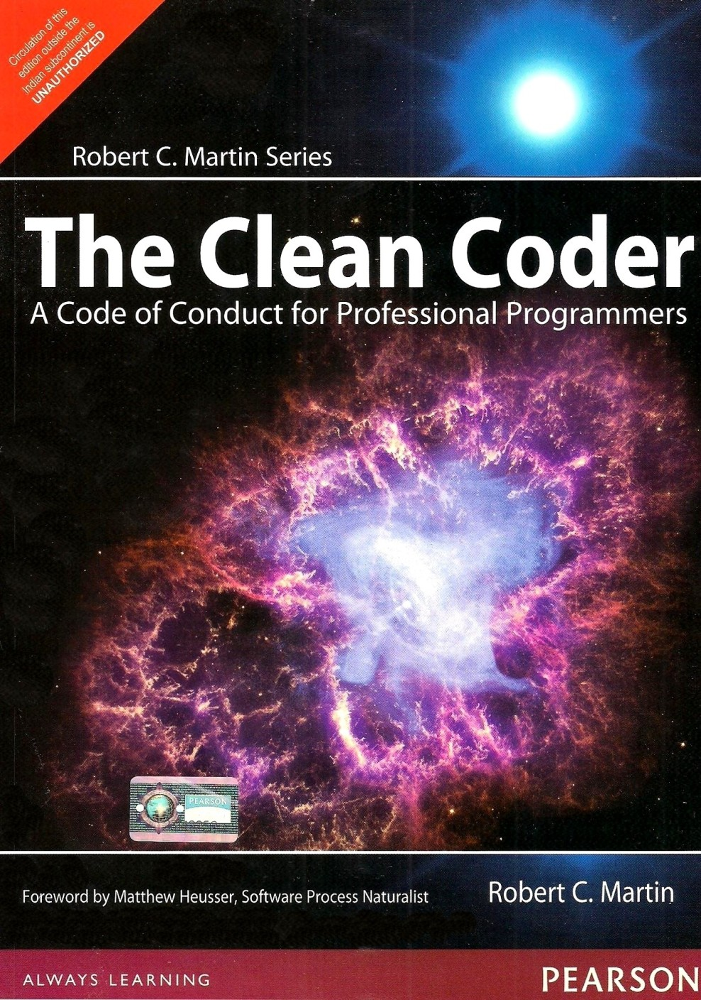
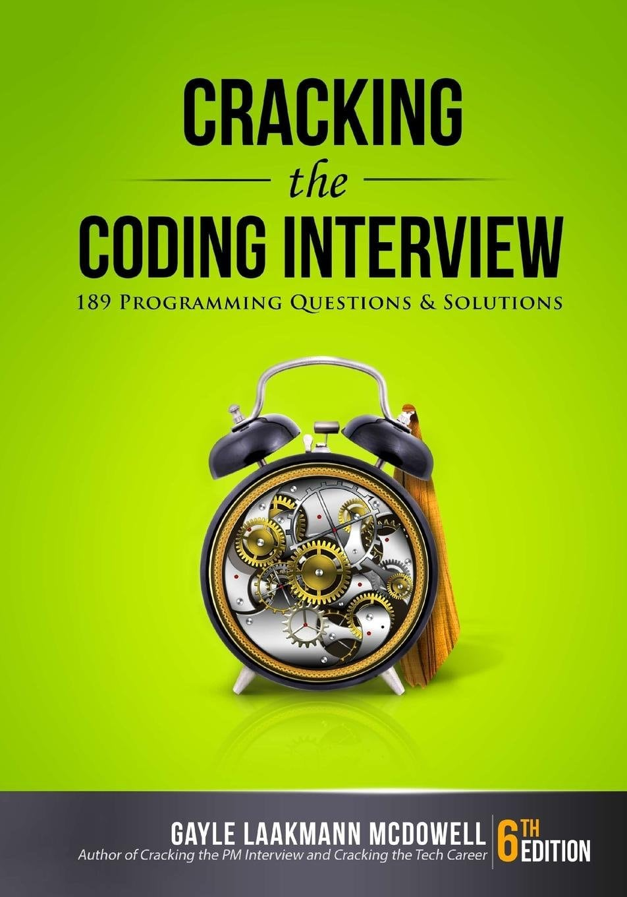
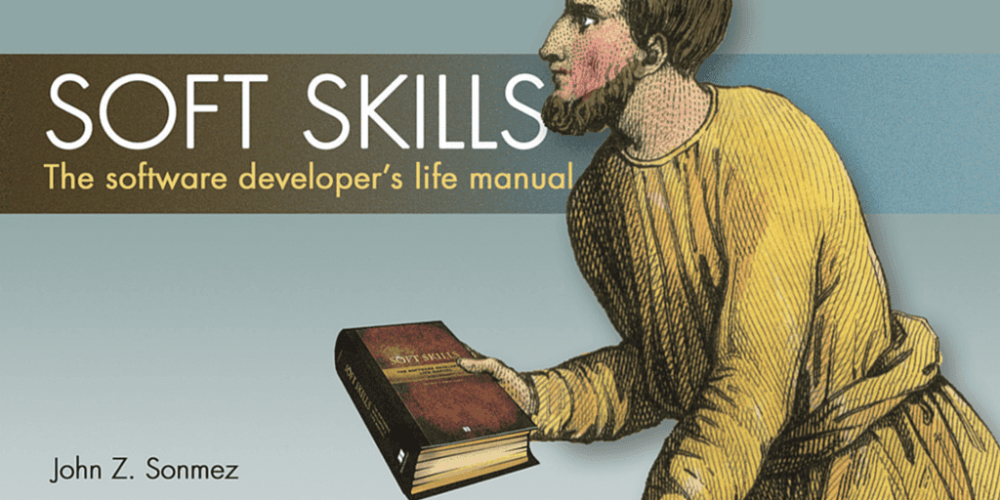
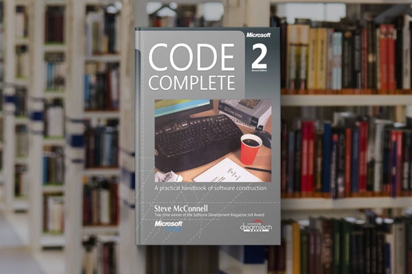
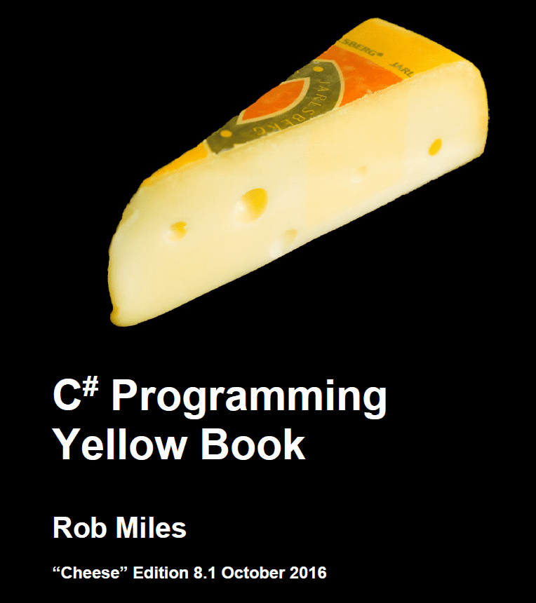

Những cuốn sách dạy lập trình cơ bản nên đọc
1. The Pragmatic Programmer

Đây là một cuốn sách dạy lập trình cơ bản được đúc kết từ kinh nghiệm nhiều năm của các chuyên gia lập trình. Các kiến thức trong sách đều rất thực tế, không nặng nề về lý thuyết mà tập trung vào những kinh nghiệm, các vấn đề thường gặp trong công việc hàng ngày.
The Pragmatic Programmer bao quát mọi vấn đề lập trình nói chung mà không đi sâu vào từng ngôn ngữ cụ thể. Nội dung được trình bày theo từng chuyên đề, kèm ví dụ rõ ràng, giúp người đọc dễ hiểu và dễ nhớ.
2. The Clean Coder: A Code of Conduct for Professional Programmers
Chỉ với khoảng 200 trang, The Clean Coder được coi như sách gối đầu giường của lập trình viên. Sách tập trung vào vấn đề viết code, đồng thời cung cấp nhiều lời khuyên thực tế của các chuyên gia về quy trình làm sản phẩm và các chuẩn mực khi lập trình.
3. Giáo trình Kỹ thuật lập trình C căn bản & nâng cao
Đây là giáo trình tiếng Việt do Phạm Văn Ất và cộng sự biên soạn, được nhiều lập trình viên tìm đọc. Sách xoay quanh ngôn ngữ lập trình C, cung cấp kiến thức từ cơ bản đến nâng cao, phù hợp cho người mới bắt đầu và cả người muốn củng cố kỹ năng.
4. Cracking the Coding Interview
Nếu bạn đang loay hoay với những câu hỏi phỏng vấn lập trình, đây chính là cuốn sách dành cho bạn. Sách tổng hợp 189 câu hỏi và lời giải, đồng thời chia sẻ nhiều thông tin hữu ích khi chuẩn bị cho phỏng vấn lập trình.
5. Soft Skills
Để trở thành một lập trình viên giỏi, ngoài kỹ năng chuyên môn bạn cần có kỹ năng mềm. Soft Skills sẽ giúp bạn đạt được sự cân bằng giữa công việc lập trình và phát triển bản thân, từ đó trở thành một lập trình viên chuyên nghiệp toàn diện.
6. Code Complete: A Practical Handbook of Software Construction
Đây là một trong những cuốn sách kinh điển trong lập trình. Nội dung như một cuốn sổ tay hướng dẫn giải quyết những vấn đề thường gặp khi viết code. Sau khi nghiền ngẫm, kỹ năng lập trình của bạn chắc chắn sẽ được cải thiện đáng kể.
7. C# Yellow Book
Được biên soạn bởi Rob Miles, C# Yellow Book là cuốn sách dành riêng cho người mới bắt đầu học lập trình. Nếu bạn chọn C# làm ngôn ngữ khởi đầu, đây là cuốn sách bạn không thể bỏ qua.